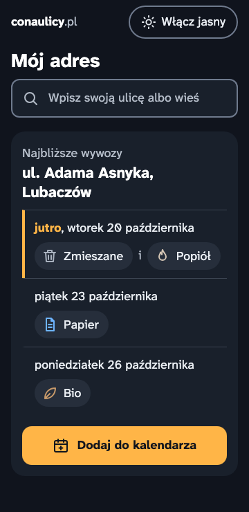
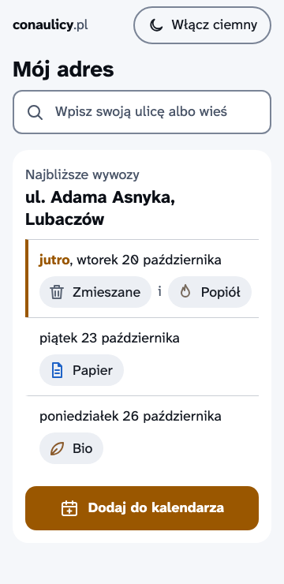
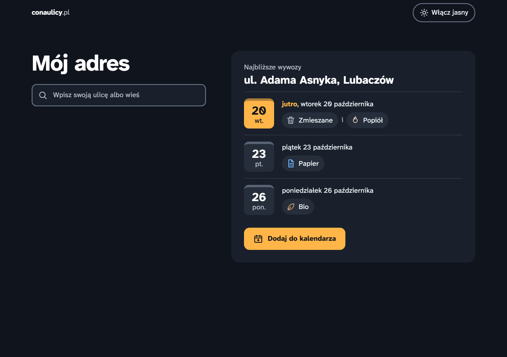
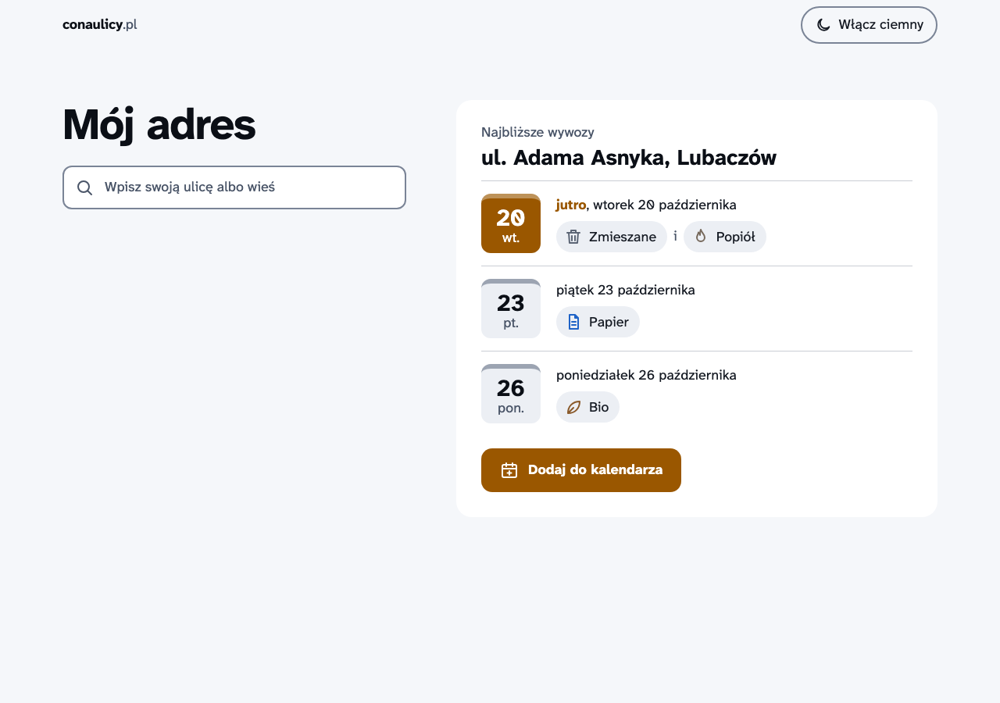
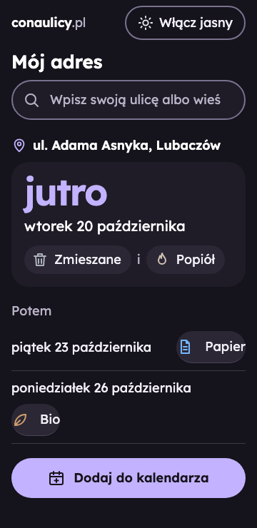
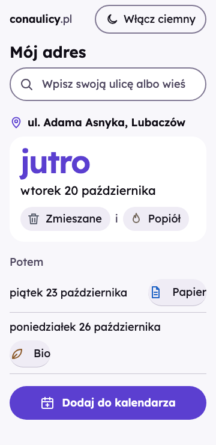
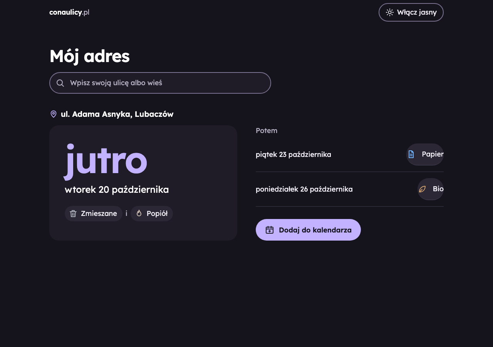
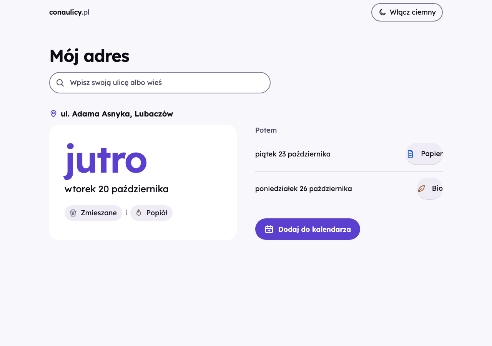

Mój adres — propozycje wyglądu
Krok 1. Dwa kierunki, każdy w motywie ciemnym (domyślnym) i jasnym. Każdy podgląd ma przełącznik „Włącz jasny”, a także działa z ?theme=light. Pod podglądem: kolory, tabele kontrastu i próbka kroju.
Latarnia
„Ciepłe światło lampy w oknie, kiedy na dworze już ciemno.”
Granat nocnego nieba i jeden bursztynowy akcent. Daty wyglądają jak kartki z kalendarza ściennego — najbliższa świeci jak zapalona lampa.
Krój: Atkinson Hyperlegible Next 400 + 700 · główna grubość 19,0 KB · akcent #FFB547 (ciemny) · #9A5700 (jasny)
Otwórz podgląd: Latarnia

latarnia/360-dark.png

latarnia/360-light.png

latarnia/1280-dark.png

latarnia/1280-light.pngSprawdzenie dużego tekstu (200%, 360 px): latarnia/360-dark-text200.png

Bez o zmierzchu
„Spokojny majowy zmierzch, kiedy w ogródkach kwitnie bez.”
Śliwkowa szarość i liliowy akcent jak kwiat bzu. Najbliższy wywóz to jedno duże słowo — „jutro” — widoczne z daleka, reszta cicho pod spodem.
Krój: Lexend 400 + 600 · główna grubość 27,0 KB · akcent #C3B2FF (ciemny) · #5B3FD0 (jasny)
Otwórz podgląd: Bez o zmierzchu

bez/360-dark.png

bez/360-light.png

bez/1280-dark.png

bez/1280-light.pngSprawdzenie dużego tekstu (200%, 360 px): bez/360-dark-text200.png